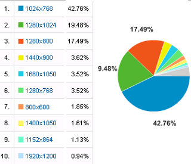

ブログのスタイルシートで横幅を何 px がいいのかなって思うんですけど、指定しない方がいいという人もいたり、スクロールしない程度の方がいいという人もいたりで人それぞれのようです。
モニターの方もワイドなものもかなり普及してきているようで、どんな感じなんだろって思うんです。わたしのディスプレイは 15 インチのちっちゃめ型なんで、画面の解像度を 800x600 に設定して文字をおっきくして見てるんです。
でも、アクセス解析をみて見ると 208 種類ものさまざまな解像度があるようなんですが、標準的な解像度でいえば 1024x768 で設定している人が多いようなんです。

シェアからいうと、わたしが設定している 800x600 はかなりマイナーな少数派のようなんです。
ディスプレイの大きさでいっても、現在販売されているものは 15 インチ型のデスクトップモニターはあんまりないようですし、20 インチ以上のものが販売台数の半数以上を占めているようです。
ブログの文字の大きさからいうと、同じ解像度ではディスプレイのインチ数が大きい方が文字も大きくてみやすいとは思いますが、それでも解像度を上げてしまうと文字がちっちゃくなっちゃうようです。
「15 インチで 800x600 に設定の場合」と
「17 インチで 1024x768 に設定の場合」とでは
かえって15 インチの方がおおきめな文字サイズでみやすいんじゃないかなって気もするんです。
とはいえ、画面の解像度を 1024x768 で使用している人が大半なので、この解像度で一番みやすいような感じのブログのよこ幅 px を指定した方がいいのかなという気もします。
ブログの横幅 px と画面の解像度の続き